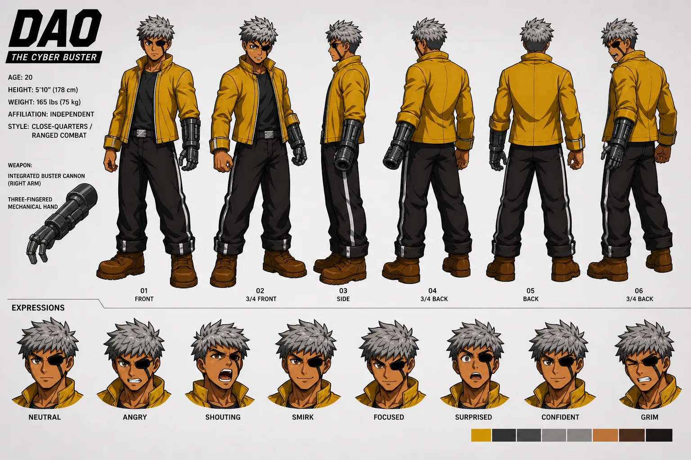

Stable Compendium record
dao
Character dossier / 03
Dao
Reluctant technomancer · system reader · Cyber Buster
He dislikes mystical labels because his relationship to technology is not performance: code is simply legible to him in ways it is not to other people.
- Stable ID
dao- Structural type
- character-section
- Canon status
- unknown
- Spoiler level
- major
Published source content
Core read
Skeptical, hesitant and competent. Dao reads ambient code and mediates systems instinctively, but competence encourages guarded self-sufficiency. His most productive character pressure forces him to trust a person when system fluency is insufficient.
Capability
- Innate fluency with ambient code, machine logic and system mediation.
- Integrated buster cannon on the right arm.
- The right mechanical arm can resolve into a three-fingered hand configuration.
- Technical skill should feel immediate and embodied, not like conventional spellcasting.
Working arc pressure
The strongest available development note is not a locked endpoint: Dao begins from guarded independence, encounters a problem code cannot solve alone, and becomes more accurate about dependence without becoming soft or credulous.
Visual identity lock
- Young adult; canonical reference sheet lists age twenty, 5'10" / 178 cm and 165 lb / 75 kg.
- Gray hair; eyepatch is over Dao’s left eye. Do not mirror or swap it.
- Yellow outerwear is the primary color signature; black trousers and grounded utility layers.
- Right-arm cybernetic/buster silhouette is non-negotiable.
yellowblacksteel
Do not change
- Never move the buster or robotic arm to the left.
- Never delete or swap the eyepatch.
- Do not turn “technomancer” into literal wizard costuming or mystic gestures.
- Do not erase the reluctance and skepticism that keep his competence from becoming smug omniscience.

05Dao — combat style matrixTechnical action board covering close-range, ranged, guard/counter and movement studies.Attach the matching local image to embed it.